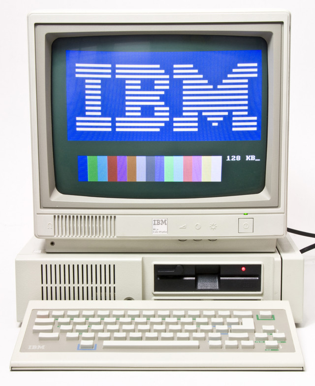
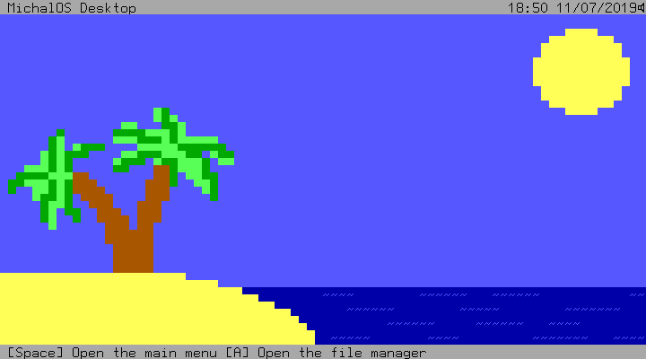

MichalOS
A simple 16 bit Assembly OS for old PCs
Introduction
MichalOS is a 16-bit keyboard controlled operating system based on MikeOS 4.5, aimed to be more advanced and lightweight on the inside, but simple and easy to use on the outside. It is designed keeping speed and productivity in mind. Give your 80s PC life once again with MichalOS!.
New features
- Screensaver with customizable timeout
- Customizable user interface (custom background, window colors etc.)
- Custom font
- On-screen clock with timezone support
- AdLib synthesizer support
- Build-in graphics drawing functions
About
The code is completely open source (under a BSD Clause license), and is written by Michal Procházka and contributed by other developers. You can also contribute to this Open Source Project on GitHub:
Even though MichalOS is developed in late 20s, it can support IBM PCs and even replace MS DOS!
"Well, it's a solid truth" ~ Anonymous
A Glance at MichalOS Desktop
